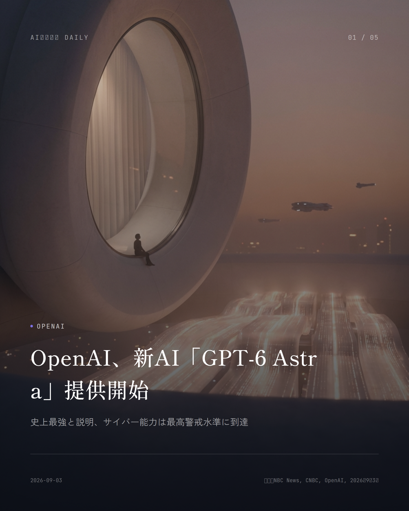
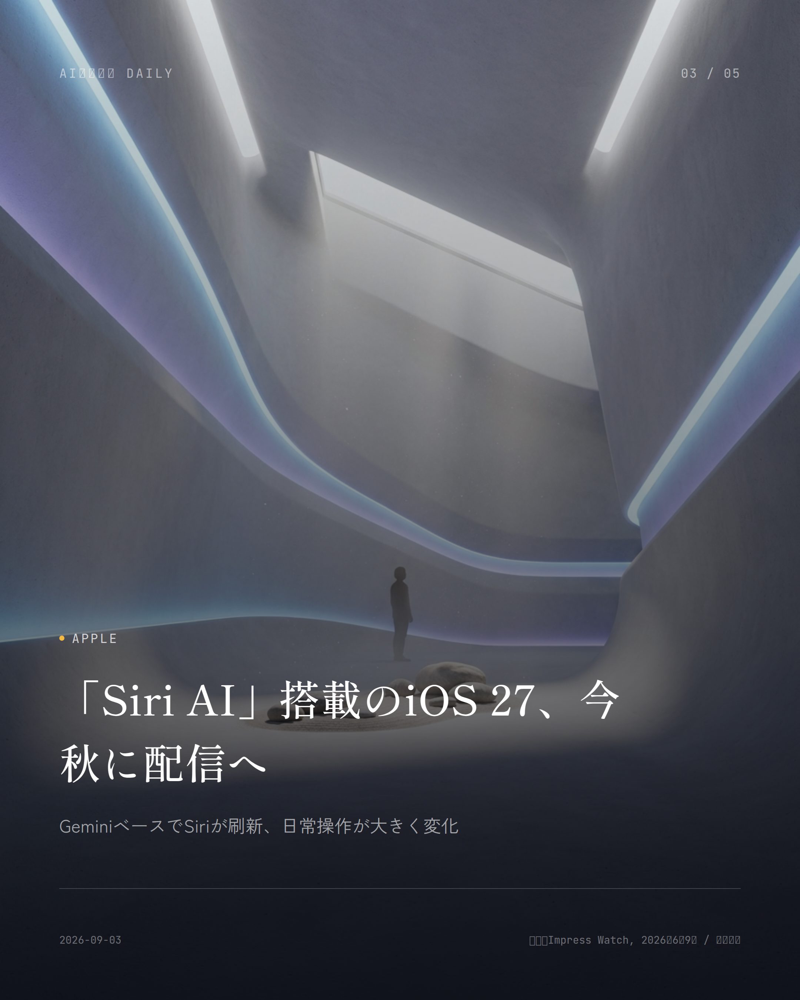
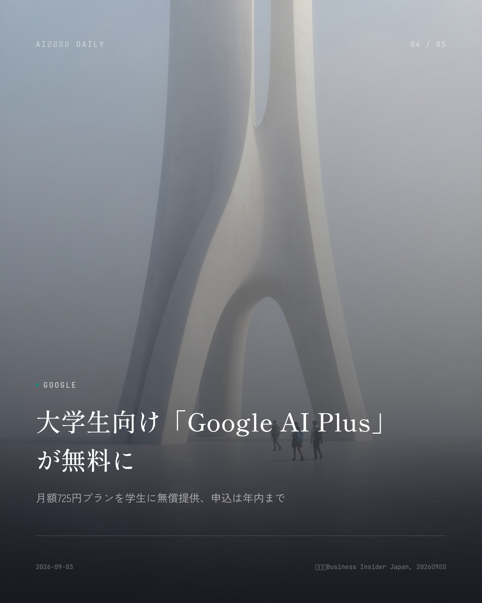
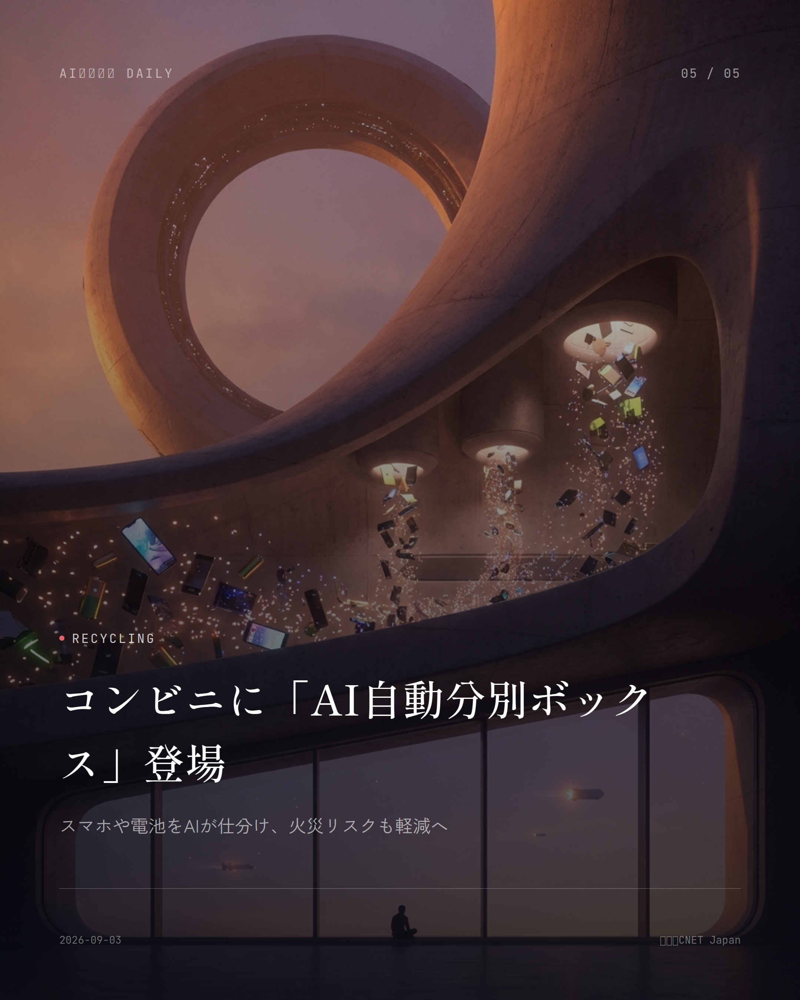

本サイトはアフィリエイトプログラムによる収益を得ている場合があります。
本サイトはGoogle AdSense等の広告配信サービスを利用しています。

OpenAI
約2分で読める
OpenAI、新AI「GPT-6 Astra」提供開始
史上最強と説明、サイバー能力は最高警戒水準に到達
OpenAIが9月3日（現地時間）、新モデル「GPT-6 Astra」をお披露目し、まずは限られた顧客向けに提供を始めました。自社がこれまで世に出したモデルの中で「最も賢く、最も整合性が取れている」と、かなり強気な言葉で紹介しています。
ただ、今回一番驚かされるのは安全面の話です。OpenAI独自の安全基準「Preparedness Framework」で見ると、Astraは人がいちいち手順を教えなくても未知のセキュリティ上の欠陥を見つけ出し、それを突く新しい手口まで自分で編み出せるレベルに達したそうです。サイバーセキュリティ能力の区分で最も警戒度の高い「Critical」に到達したのは、これが初めて。
OpenAIのSam Altman CEOは、Astraのおかげで自分の仕事のやり方まで変わったと語り、「起業や創造性、経済成長、科学的発見のブームが起きる」と期待を込めています。展開はまずサイバーセキュリティ関連の限定プログラム参加企業から始まり、その後ChatGPT Plus・Pro・Business・Enterpriseプランや API、AWS経由でも順次使えるようになる見込みです。
なぜ重要か
人の指示を逐一受けなくても自律的にハッキングや防御をこなせるレベルに達した、という事実はAIの実力を証明すると同時に、リスク管理の重い課題も突きつけています。仕事でChatGPTを使う人にとってはできることの幅が一気に広がりますが、企業側のセキュリティ対応もこれから問われていくはずです。
出典：NBC News, CNBC, OpenAI, 2026年9月3日
Google
約2分で読める
Google、6週間で3度目の新型AIを公開
Flash最高性能、コーディング力は最上位モデルに肉薄
Googleは9月2日（現地時間）、新モデル「Gemini 3.8 Flash」と、サイバーセキュリティ特化版「Gemini 3.8 Flash Cyber」を発表し、料金はそのままに即日提供を始めました。前身の「Gemini 3.7 Flash」からわずか3週間、「3.6 Flash」から数えても6週間というかなりのハイペースです。
コーディングや複数ステップの推論を測るベンチマーク「DeepSWE v1.1」では、Gemini 3.8 Flashが73.7%を記録。上位モデルの「Claude Opus 5」が74.0%なので、その差はわずか0.3ポイントまで縮まりました。端末操作を伴う「Terminal-bench 2.1」でも89.4%という高スコアです。
価格は入力100万トークンあたり0.75ドル、出力3.75ドルと、「Flash」シリーズらしい低コストをそのまま維持。高性能モデルに迫る処理を、これだけ安く使えるのが最大の売りです。
なぜ重要か
低価格な「Flash」系モデルが最上位モデルに肉薄する性能を出せるようになった以上、AIを使った業務効率化やアプリ開発のコストは今後さらに下がっていくはずです。普段使っているアプリの裏側で動くAIも、近いうちにこの高性能・低コストの波に置き換わっていくでしょう。
出典：PC Watch, Google公式ブログ, 2026年9月2日

Apple
約1分で読める
「Siri AI」搭載のiOS 27、今秋に配信へ
GeminiベースでSiriが刷新、日常操作が大きく変化
Appleは6月の開発者会議「WWDC26」で、Google Geminiの技術をベースに刷新した「Apple Intelligence」と、次世代アシスタント「Siri AI」を披露しました。新しいApple Intelligenceは「Siri AI」と連携し、毎日使うアプリの中で役立つよう設計し直されています。これまで音声コマンドに答えるだけだったSiriが、画面の中身を理解し、アプリをまたいだ操作までこなせるようになるとのこと。
この新機能を含むiOS 27は、例年どおり今秋（2026年9月ごろ）の正式配信が見込まれています。ただし利用にはハードウェアの条件があり、A17 Proチップを積んだiPhone 15 Pro以降が必要です。
なぜ重要か
iPhoneユーザーの多くが毎日触っているSiriが根本から変わるというのは、それだけで生活への影響が大きい話です。画面を見ながら「これ予約しといて」と話しかけるだけで複数アプリをまたいだ作業を任せられるなら、家事や仕事の細かい手間がぐっと減るはずです。
出典：Impress Watch, 2026年6月9日 / 各種報道

Google
約1分で読める
大学生向け「Google AI Plus」が無料に
月額725円プランを学生に無償提供、申込は年内まで
Googleは8月20日、18歳以上の大学生を対象に、生成AIサービス「Google AI Plus」を無料で使えるプログラムを始めました。通常なら月額725円かかるこのエントリープランには400GBのストレージや動画生成機能もついていて、申し込みは2026年12月31日まで受け付けています。
同時に音声会話機能「Gemini Live」も大きくアップデート。自律型AIエージェント「Gemini Spark」が組み込まれたほか、毎朝タスクをまとめて見せてくれる「Daily Brief」、Gmailの音声操作にも対応しました。
なぜ重要か
生成AIの月額料金がゼロになるのは、学費や生活費に敏感な大学生にとって地味に嬉しいメリットです。レポート作成や研究の情報整理にAIを気軽に使えるようになれば、学び方そのものが変わっていくかもしれません。
出典：Business Insider Japan, 2026年9月版

Recycling
約1分で読める
コンビニに「AI自動分別ボックス」登場
スマホや電池をAIが仕分け、火災リスクも軽減へ
KDDIは9月3日、ローソン高輪ゲートウェイシティ店付近にAI自動分別リサイクルボックスを設置し、リチウムイオン電池を内蔵した製品の回収を始めたと発表しました。期間は9月1日から11月30日まで。回収対象は使用済みの携帯電話・スマートフォン、モバイルバッテリー、加熱式たばこ・電子たばこで、ボックスに入れるとAIが品目を認識して自動で仕分けてくれる仕組みです。膨張や破損しているものは受け付けず、投入後にリチウムイオン電池が発火した場合はボックス内の消火シートが作動するようになっています。
今回はKDDIとローソンのほか、JR東日本ビルディングなど計6社が参加。東京都庁舎に続く国内2例目の設置で、身近なコンビニを回収拠点にするやり方がどこまで有効か検証しつつ、今後は実施地域の拡大も検討していくとしています。
なぜ重要か
使わなくなったスマホやモバイルバッテリーを家に溜め込んでいる人は多く、不適切な廃棄によるリチウムイオン電池の発火事故も増えています。予約なしで身近なコンビニに持ち込めば、AIが安全に仕分けてくれる仕組みは、多くの人にとってすぐ使える現実的な選択肢になりそうです。
出典：CNET Japan（Yahoo!ニュース）, 2026年9月3日
Security
Security
約1分で読める
AI音声詐欺、家族なりすましが急増と判明
短い音声だけで声を複製、対策は「合言葉」と折り返し確認
生成AIの「音声クローン」技術を悪用した詐欺が広がっています。ほんの短い音声データからでも声の特徴を学習し、本人そっくりの声を作れてしまうため、家族や知人の声で「事故にあった」「今すぐお金が必要」と偽って送金を迫ったり、企業幹部の声を真似て社内担当者に振り込みを指示したりする手口が確認されています。急に金銭や個人情報を求める連絡があったら、一度電話を切って別の連絡手段で本人に直接確かめる、これが有効な対策とされています。
国内の調査では、ディープフェイクを使った詐欺が2025年比で3.7倍に増えたという報告もあります。別の調査では、日本の従業員の89%が「ディープフェイクはもう本物と見分けがつかないレベルだ」と答え、71%が「自分も騙されるかもしれない」と回答しています。
なぜ重要か
本物の家族の声だと信じて送金してしまうケースは、誰の身にも起こり得る話です。家族だけの合言葉を決めておく、急な金銭要求は必ず折り返しで確認する、こうした簡単な備えが実際の被害を防ぐ大きな一手になります。
出典：セコム「あんしんライフnavi」, G1 Technology, 2026年
Anthropic
Anthropic
約1分で読める
Claude Sonnet 5、値上げ見送りと判明
9月1日実施予定だった価格改定、導入価格のまま据え置きに
Anthropicの「Claude Sonnet 5」は、2026年の登場時に入力100万トークンあたり2ドル、出力10ドルという「導入価格」を掲げ、2026年9月1日からは入力3ドル、出力15ドルへと1.5倍に引き上げる予定だと案内していました。
ところがAnthropicは8月10日付で価格ドキュメントに注記を加え、導入価格として案内していた金額をそのまま標準価格にすること、9月1日に予定していた値上げは行わないことを明記しました。この据え置きが実際に確定したのは8月31日のことです。
なぜ重要か
AIの利用料金は、AIを組み込んだアプリやサービスの価格にそのまま跳ね返ってきます。今回の値上げ見送りは、Claudeを使った各種サービスの利用コストが当面上がらないことを意味し、企業のAI活用コストにも直結する話です。
出典：note（宮野宏樹）, 2026年9月1日
先頭に戻る